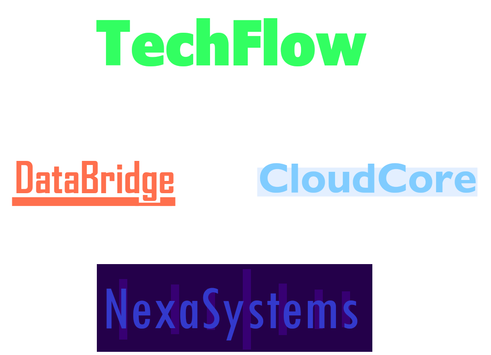

Професійний та надійний API
API PRO — команда, що перетворює ідеї на працюючі API-рішення
Ми — команда розробників, які спеціалізуються на проєктуванні, розробці та підтримці API для сучасних веб-проєктів. Наша задача — не просто написати код, а створити стабільну основу для продукту, яка витримує навантаження, захищена від атак і легко масштабується.
API — це серце будь-якого сучасного сервісу. Саме через нього відбувається обмін даними, робота клієнтських застосунків і інтеграція з іншими платформами. Помилки на цьому рівні можуть коштувати дорого: від втрати даних до повного зламу системи. Тому ми приділяємо особливу увагу архітектурі, безпеці та продуктивності.
Що ми робимо
- Розробляємо REST та інші типи API під конкретні задачі
- Проєктуємо архітектуру з урахуванням масштабування
- Оптимізуємо швидкість роботи та навантаження
- Впроваджуємо захист (аутентифікація, авторизація, валідація даних)
- Консультуємо розробників і команди на будь-якому етапі
Замовити
Ми працюємо як з окремими замовленнями, так і з довготривалими проєктами, забезпечуючи підтримку та розвиток API після запуску.
API PRO працює з широким спектром замовлень — від створення API з нуля для стартапів до доопрацювання та оптимізації вже існуючих систем. За час роботи ми брали участь у проєктах, пов’язаних із розробкою API для веб-сервісів і мобільних застосунків, інтеграцією платіжних систем та сторонніх сервісів, створенням систем авторизації та управління користувачами, а також оптимізацією продуктивності під високе навантаження.
Наприклад, ми розробляли API для онлайн-платформи з особистими кабінетами та підписками, працювали над бекендом сервісу з великою кількістю запитів у реальному часі, займалися інтеграцією зовнішніх API для обробки платежів і аналітики, а також створювали системи управління даними для внутрішніх бізнес-процесів.
Наш досвід охоплює різні типи продуктів і рівні складності, що дозволяє гнучко підходити до кожного нового завдання. Бренди, з якими ми працювали: TechFlow, DataBridge, CloudCore та NexaSystems.

Наша команда
У API PRO працюють розробники, які спеціалізуються на створенні API та серверної логіки для веб-проєктів. Це люди, які розуміють, як будуються системи “під капотом”: як обробляються запити, як організовується передача даних і як забезпечується стабільна робота сервісу.
У команді є як більш досвідчені спеціалісти, так і розробники, які пройшли шлях від навчання до реальних проєктів всередині API PRO. Ми свідомо будуємо таку структуру: сильні розробники задають стандарт якості, а нові учасники швидко ростуть через практику.
Вітайте наших спеціалістів!
Emily Parker
Ethan Green
Julian Reed
Mei-Ling Chen
Thomas Miller
Adrian Morales
Sanjay Gupta
Elena Vance
Влаштування
API PRO відкритий для програмістів, які хочуть працювати над реальними задачами, отримувати досвід і розвиватись у професійному середовищі.
Навіть якщо ти ще не маєш великого досвіду — через навчання та практику можна вирости до рівня, коли ти зможеш працювати з комерційними проєктами.
Для замовників це означає:
- Доступ до перевірених розробників
- Якісні API-рішення
- Підтримку та розвиток продукту
Для розробників:
- Реальні замовлення
- Досвід роботи в команді
- Можливість професійного росту
Ми не очікуємо ідеальних знань на старті, але очікуємо відповідального підходу та бажання розвиватись. У процесі роботи ти отримаєш доступ до практичних задач, внутрішніх матеріалів та підтримки від більш досвідчених учасників команди.
Процес приєднання побудований так, щоб оцінити не тільки знання, а й мислення.
Ми не кидаємо нових учасників у складні задачі без підготовки. Ріст відбувається поступово, через реальний досвід і роботу з кодом, який використовується в продакшені. Для замовників це означає, що над їх проєктами працюють розробники, які вже пройшли відбір і показали результат на практиці. Ми контролюємо якість на кожному етапі — від постановки задачі до фінальної реалізації. Для розробників це означає не просто “отримати задачу”, а стати частиною системи, де є чіткі стандарти розробки, є підтримка і зворотний зв’язок, є можливість впливати на рішення, є реальний ріст, а не просто виконання дрібних задач.
Якщо ти хочеш розвиватись і працювати з реальними проєктами — API PRO дає для цього всі умови.
Навчання
Окрім цього, ми будуємо навчальну платформу для тих, хто хоче освоїти цю сферу.
API PRO надає курси з API, де пояснюються не тільки основи, а й реальні практики: як будуються системи, як уникати типових помилок, як писати код, який буде використовуватись у продакшені.
Навчання базується на практиці:
- Реальні приклади замість абстрактної теорії
- Пояснення складних концепцій простою мовою
- Підготовка до роботи з реальними проєктами
Окрім базового навчання, курси побудовані таким чином, щоб поступово занурювати в реальний процес розробки: учасники працюють із прикладами, максимально наближеними до комерційних задач, вчаться читати та розуміти чужий код, проєктувати структуру API, правильно обробляти запити та помилки, а також враховувати питання безпеки й продуктивності.
У процесі навчання увага приділяється не тільки написанню коду, а й підходу до розробки в цілому — як мислити як розробник, як будувати логіку системи та як уникати рішень, які можуть створити проблеми в майбутньому. Це дозволяє після проходження курсів не просто знати теорію, а мати базу для переходу до реальних проєктів і роботи в команді.